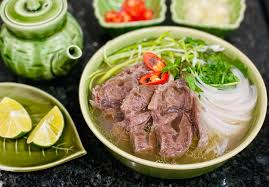
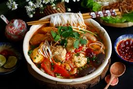
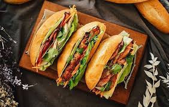

Top Món Ăn Tôi Thích
1. Phở
Phở là một món ăn truyền thống và biểu tượng của ẩm thực Việt Nam. Món ăn này có nguồn gốc từ Việt Nam và đã trở thành một phần không thể thiếu trong văn hóa ẩm thực.
2. Bún riêu
Bún riêu là món súp truyền thống của Việt Nam gồm nước luộc và bún. Có một số loại bún riêu, bao gồm bún riêu cua, bún riêu cá và bún riêu ốc.
3. Bánh mỳ
Bánh mì là một loại bánh mì baguette của Việt Nam, nổi tiếng với vỏ ngoài giòn tan và ruột mềm. Nó được làm từ bột mì và có nhiều loại nhân khác nhau tùy theo sở thích và vùng miền. Bánh mì là một món ăn phổ biến và được yêu thích trong ẩm thực Việt Nam.
